Lucky Spinner Timeline
It's recommended that you save 500 tokens to prepare to full pity the grand prize.
On average, it will take you about 300 tokens, but to avoid bad RNG and unless you willing to spend a bit, I suggest save until 500 tokens to be sure.
The list will be by released by week order. Find out what week you are currently on your server and match what is below.
Once your server reaches past 1 month mark, Lucky Spinner Event will always start on Friday at reset and ends Sunday night.
Week 1 - Artifact: Warlord Hammer
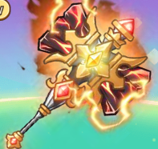Active: Basic atk and combos deal an additional 30% AoE Dmg.
Week 2 - Advanced Mount: White Tiger
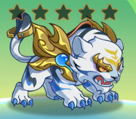Active: Targets with HP percentage lower than caster take 15% increased Dmg,
while those with HP percentage above the caster have their ATK reduced by 10%.
Week 3 - Red Soul Type 2 Selector
Tip: Use Red Soul Type 1 and Type 2 to combine into a Pink Soul with BOTH abilities.
Week 4 - Advanced Mount: Blue Ox
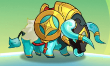Active: Increase DMG RES by 10% and shorten the duration of control effects by 30%.
Week 5 - Choose 1: Red Soul Type 2 Selector
Or Back Decor Morph: Moonlit Wisp
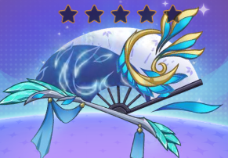
Active: After the battle begins, each releasing of an active skill increase Skill Dmg by 1.5%, stacking up to 10 times.
Note: your class skill is not an active skill, it is a class skill.
Week 6 - Advanced Mount: Blue Queen
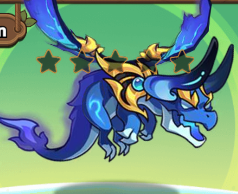Active: Distribute 10% of DMG dealt to up to 5 surroudning enemies when dealing DMG.
Week 7 - Choose 1: Red Soul Type 2 Selector
Or Back Decor Morph: Emerald Embrace
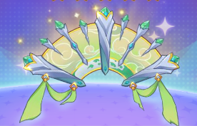
Active: After the battle begins, each combo increases combo DMG by 0.5%, stacking up to 60 times.
Week 8 - Advanced Mount: Round Pepe

Active: Every 10 seconds, defeat 1 enemy and boost ATK by 15% for 5 seconds. If the target is a Boss or Player, stun for an additional 1 second.
Week 9 - Choose 1: Red Soul Type 2 Selector
Or Back Decor Morph: Blade Pursuit
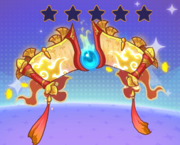
Active: After the battle begins, each counter increases counter DMG by 0.5%, stacking up to 60 times.
Week 10 - Advanced Mount: Purple Wing
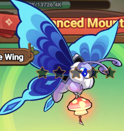Active: After the battle begins, immediately deals 5000% AoE DMG, and launches targets within range for 0.5 second. Releases every 11 seconds.
Week 11 - Choose 1: Red Soul Type 2 Selector
Or Back Decor Morph: Moonlit Wisp
Week 12 - Advanced Mount: Magic Carpet
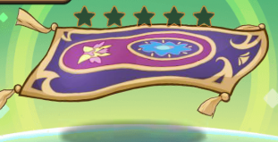Active: After casting skills 6 times, restore full energy to 1 random skill.
Week 13 - Choose 1: Red Soul Type 2 Selector
Or Back Decor Morph: Emerald Embrace
Week 14 - Advanced Mount: Koi Paper Kite
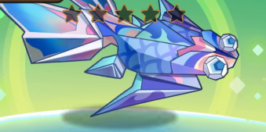Active: Every 3 combo triggers an additional 500% AoE DMG.
Week 15 - Choose 1: Red Soul Type 2 Selector
Or Back Decor Morph: Blade Pursuit
Week 16 - Advanced Mount: Mini Motorcycle
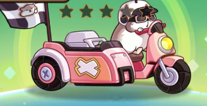Active: With every 1 counter, increase global counter DMG by 10% for 3 seconds,
up to a maximum of 30%. The duration refreshes with each new counter trigger.
Week 17 - Choose 1: Red Soul Type 2 Selector
Or Back Decor Morph: Moonlit Wisp
Week 18 - Choose 1: Artifact: Warlord Hammer
Or Advanced Mount: White Tiger
Or Advanced Mount: Blue Ox
Week 19 - Choose 1: Red Soul Type 2 Selector
Or Back Decor Morph: Emerald Embrace
Week 20 - Choose 1: Advanced Mount: Blue Queen
Or Advanced Mount: Round Pepe
Or Advanced Mount: Purple Wing
Week 21 - Choose 1: Red Soul Type 2 Selector
Or Back Decor Morph: Blade Pursuit
Week 22 - Choose 1: Advanced Mount: Magic Carpet
Or Advanced Mount: Koi Paper Kite
Or Advanced Mount: Mini Motorcycle
Week 23 - Choose 1: Red Soul Type 2 Selector
Or Back Decor Morph: Moonlit Wisp
Week 24 - Choose 1: Artifact: Warlord Hammer
Or Advanced Mount: White Tiger
Or Advanced Mount: Blue Ox
Week 25 - Choose 1: Red Soul Type 2 Selector
Or Back Decor Morph: Emerald Embrace
Week 26 - Choose 1: Advanced Mount: Blue Queen
Or Advanced Mount: Round Pepe
Or Advanced Mount: Purple Wing
Week 27 - Choose 1: Red Soul Type 2 Selector
Or Back Decor Morph: Blade Pursuit
Week 28 - Choose 1: Advanced Mount: Magic Carpet
Or Advanced Mount: Koi Paper Kite
Or Advanced Mount: Mini Motorcycle
Week 29 - Choose 1: Red Soul Type 2 Selector
Or Back Decor Morph: Moonlit Wisp
Week 30 - Choose 1: Artifact: Warlord Hammer
Or Advanced Mount: White Tiger
Or Advanced Mount: Blue Ox
All weeks moving forward repeat in the same patterns
Week 2: Warlord Hammer, White Tiger, or Blue Ox
Week 3: Archer Back Decor or Red Soul 2
Week 4: Blue Queen, Round Pepe, or Purple Wing
Week 5: Warrior Back Decor or Red Soul 2
Week 6: Magic Carpet, Koi, Mini Motorcycle